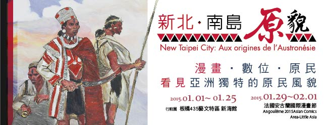
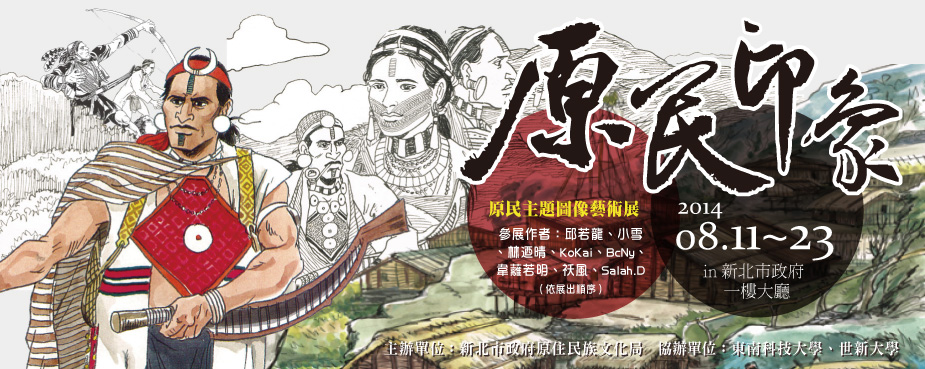
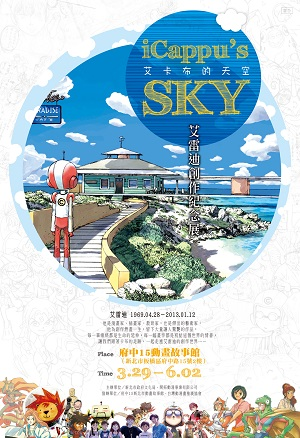
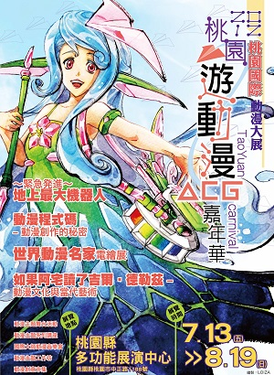

原繪聲影 原住民族主題繪本暨動漫特展
- 2015.09.04~2015.11.30
台灣的原民主題藝術在流行音樂、影視媒體方面向來都是對世界發聲的利器, 近年來原民主題之動畫、漫畫也逐漸獲得國際關注: 以電影《賽德克．巴萊》漫畫原著聞名國際的漫畫家邱若龍先生, 已於2013年9月由法國Akata出版社發行「漫畫巴萊」法文版。台灣的原民主題圖像藝術更於2015年2月受邀於國際動漫勝地「安古蘭國際漫畫節」推出「南島原貌特展」, 成功以台灣原圖像藝術進行國際文化推廣。為將享譽國際之原民圖像藝術推廣給更多一般民眾了解, 特別規劃了本次展出。以一般大眾能接受的動漫語言, 以平面、立體、影音等多媒體方式進行展出, 搭配講座、工作坊等互動活動。本展預定以「凱達格蘭文化館」所在地北投傳說中的「凱達格蘭女巫」為展出核心, 同時蒐羅不同原民族群中與「魔法」、「幻想」相關之圖像藝術創作; 邀請展品包含原民主題之漫畫、動畫、繪本⋯⋯等跨領域創作媒體, 表現出原民主題充滿可能性的特質。本展亦將設置專區介紹世新大學視覺傳達系原住民專班學生的作品, 讓本展能同時納入產、學之不同面向, 成為全方位之綜合型原民藝術展。
- 地點台北市北投區中山路3-1號 (凱達格蘭文化館)
「新北‧南島原貌」特展
- 2015.01.01~2015.01.25
新北市原住民鮮豔的編織、紋面藝術、祖靈信仰, 都與漫畫結合, 2015年1月29日即將在法國安古蘭國際漫畫節登場! 這些深具台灣原民風貌的作品, 搶先於板橋435藝文特區的行前展中與民眾見面。
國際漫畫界的年度盛事「法國安古蘭國際漫畫節」, 今年將邀請新北市政府原住民族行政局所策劃的「新北‧南島原貌」— 原民漫畫主題特展參展。包含深受國內外矚目的漫畫家邱若龍的《漫畫巴萊》, 以及新北市新銳的原民漫畫家作品, 都會在「新北‧南島原貌」特展展出。
獨特的紋面文化、豐年祭、神話傳說、部落圖騰等, 將在歐洲與全球漫畫愛好者眼前展示, 為明年的安古蘭漫畫節, 增添更多台灣原民色彩。透過『新北‧南島原貌』的展出, 希望能吸引更多國際創作者來台取材, 讓台灣原民獨特的文化樣貌更廣泛地被國際社會認識。- 地點新北市板橋 435 藝文特區新海館
「原民‧印象」台灣原住民圖像藝術創作展
- 2014.08.11~2014.08.23
本次展出預定以「原民‧印象」為策展主題, 現場共分「創作原民」、「原民創作」、「影音原民」以及「經典原民」四個展區, 以以靜態、影音及實體文物等不同的形式與媒介, 為觀眾帶來全新的感受體驗! 展出作品將分為「以原住民為主題的作品」以及「具原住民身分之創作者」兩大類型, 蒐羅各族群之圖像藝術作品; 展覽中亦將設置專區介紹目前各級學校與視覺藝術相關之原住民學生作品, 讓本展覽能同時納入產、官、學三種面向, 成為全方位之綜合型原民藝術展。
- 地點新北市政府1樓大廳（中廊）
- 參展藝術家名單
- 【創作原民】展區
- 邱若龍／小雪／林迺晴／KoKai／BcNy／Salah.D
- 【原民創作】展區
- 韋蘺若明／祅風
- 【影音原民】展區
- 東南科技大學數位媒體設計系
／世新大學數位多媒體學系原民班 - 【經典原民】展區
- 郭掌從／黃飛／曾孝德
府中15動漫故事館「艾雷迪創作紀念展」
- 2013.03.29~2013.06.02
他是漫畫家, 插畫家, 教育家,
也是傑出的藝術家,
他為創作燃盡一生,
留下大量讓人驚艷的作品,
每一筆線條都是生命的延伸,
每一幅畫作都是寫給這個世界的情書,
讓我們跟著卡布的足跡,
一起走進艾雷迪的創作世界…
iCappu's Sky—艾雷迪創作紀念展- 地點新北市府中15動畫故事館
跨越疆界 府中15動漫之間特展
2012 桃園國際動漫大展
- 2012.07.13~2012.8.19
本次活動的全名為「2012桃園國際動漫大展—桃園遊動漫嘉年華」, 這是舉辦日期由7月13日至8月19日長達5週的大型動漫活動展覽, 地點為桃園縣多功能展演中心1樓，展覽內容有靜態的常態展覽「動漫的銘刻與解碼: 動漫文化美學特展」, 銘刻(Decade) 是對於記憶與時間的敬意, 而解碼 (Decode) 則是分解與理解的行動, 因此「動漫的銘刻與解碼」, 試圖運用時間性與記憶性, 呈現動漫文化的解構與過程, 運用展出的方式進行彼此的對話與呈現。此展區分成六大展區, 分別為「動漫名家電繪展」、「動漫程式碼」、「如果阿宅讀了吉爾‧德勒茲」、「緊急発進～地上最大機器人」、「遊動漫閱讀格納庫」、「銘刻動畫影展」等等, 其中除了傳統的漫畫插畫家畫作、大小模型、個人製作動畫的展示, 也有結合動漫與當代藝術而成的特別展覽, 另外包括國內製作機器人的祥儀、大宇遊戲公司、未來數位等多家國內廠商也一同參與盛會。(關於「動漫文化美學特展」的詳細內容可參考8月號的介紹)
- 地點桃園縣展演中心
- 活動內容
- 同人誌即售
- 角色扮演活動
- 動漫相關商品展售
- 動漫相關日本嘉賓來訪
- 特別來賓速水獎